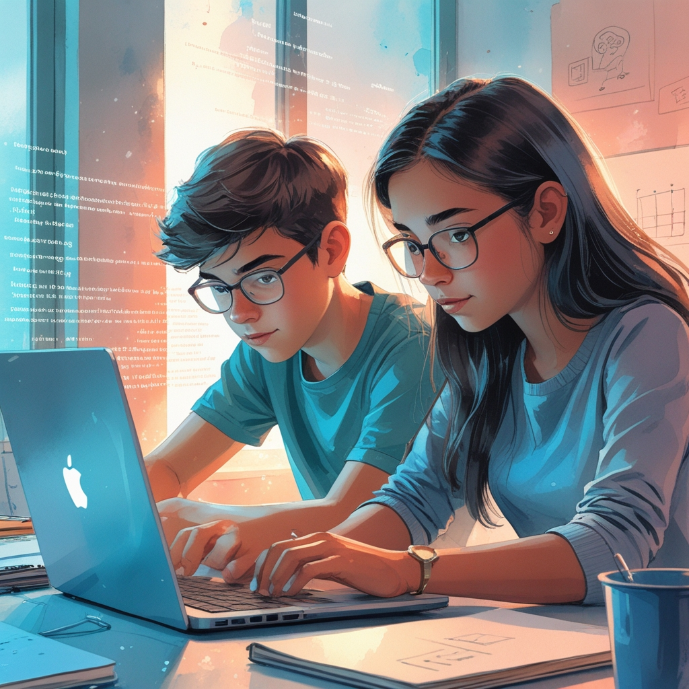
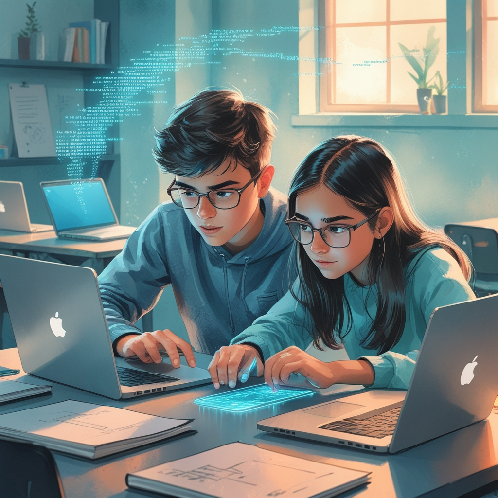
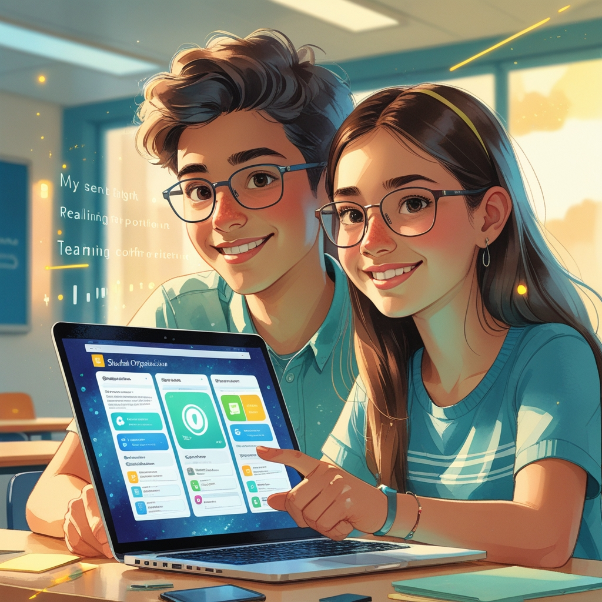

En Carles i n’Ona tenen 15 anys i una passió compartida: programar. Des de fa mesos, passen tardes junts creant codis, dibuixant esquemes i provant noves idees. Somien amb fer alguna cosa que ajudi als estudiants a organitzar-se i aconseguir objectius. Quan el seu institut anuncia un concurs tecnològic, saben que és l’oportunitat perfecta. Sense dubtar-ho, decideixen unir forces i desenvolupar una app innovadora. Tots dos treballen amb entusiasme: en Carles escriu el codi principal, i n’Ona dissenya la interfície perquè sigui fàcil d’utilitzar.
Finalment arriba el dia del concurs. Presenten la seva app amb orgull. Funciona bé i el jurat està impressionat, però no guanyen el primer premi. Al principi senten una mica de decepció, però ràpidament recorden tot el que han aconseguit: han creat alguna cosa junts, ajudant-se i aprenent l’un de l’altre.
En Carles mira n’Ona i somriu:
—Saps què? Crec que hem hackejat el futur.
—Com? —pregunta ella.
—No amb premis ni reconeixements… sinó amb esforç i amistat —diu ell.


I és cert. L’amistat i la passió compartida els han permès hackejar el futur junts, demostrant que l’esforç val la pena quan es comparteix. No necessiten medalles per saber que han aconseguit el més important: treballar junts i créixer com a equip. I mentre surten del gimnàs del concurs, cansats però contents, en Carles i n’Ona saben que aquest projecte és només el principi. El futur està ple de possibilitats, i ara ja saben que el millor camí és compartir la passió amb els amics i mai deixar d’aprendre.